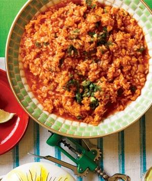

<h2>Vertically align horizontal list items</h2>
<ul class="vertical-align">
    <li><a href="#">List item #1</a></li>
    <li><a href="#">List item #2</a></li>
    <li><a href="#">List item #3</a></li>
    <li><a href="#">List item #4</a></li>
    <li><a href="#">This List item #5 is Longer than All the Rest</a></li>
</ul>

<br><br>

<h2>CSS Counter</h2>
<ol class="counter">
    <li>List item #1</li>
    <li>List item #2</li>
    <li>List item #3</li>
    <li>List item #4</li>
    <li>This List item #5 is Longer than All the Rest</li>
</ol>

<br><br>

<h2>CSS Filter</h2>
<div class="filter-pics">
    
    
</div>

<br><br>

<h2>Flexbox Layout Prototype</h2>
<div class="flex">
    <div class="intro">My intro text</div>
    <div class="sidebar">My sidebar</div>
    <div class="mainContent">My main content</div>
</div>

